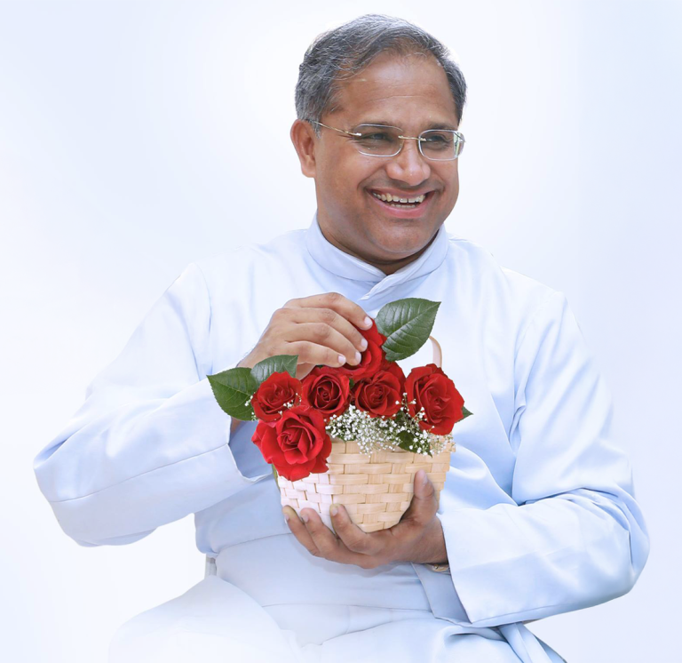

A visionary Carmelite priest dedicated to building a more peaceful and harmonious world through faith, culture, and dialogue.

Fr. Roby Kannamchirayil CMI is a visionary leader, scholar, and spiritual guide dedicated to promoting interfaith harmony, cultural preservation, and social empowerment. As Director of the Chavara Cultural Centre, Delhi, and an active NGO Representative at the United Nations, his efforts have touched lives across the globe.
Born and raised in Kerala, India, Fr. Roby brought the rich spiritual heritage of the Carmelites of Mary Immaculate (CMI) to bear on the pressing challenges of inter-religious dialogue and cultural understanding in contemporary India and beyond.
Fr. Roby Kannanchira CMI is a priest of the Carmelites of Mary Immaculate (CMI), one of India's first indigenous Catholic religious congregations founded by Blessed Kuriakose Elias Chavara. He has served the Church and society in multiple capacities — as a theologian, educator, cultural activist, and international advocate.
A Doctorate in Theology specializing in Interreligious Dialogue, his academic work has been widely recognized in theological circles. He has lectured at universities and conferences around the world, sharing insights on peace, dialogue, and the spirituality of encounter.
As Director of the Chavara Cultural Centre in Delhi, Fr. Roby transforms the centre into a vibrant meeting place for arts, culture, spirituality, and interfaith encounter. Under his leadership, the Centre has organized hundreds of programmes bringing together people of diverse faiths and backgrounds.
Trained in the rich tradition of the Carmelites of Mary Immaculate, foundation of a life dedicated to God and service.
Earned doctoral degree with focus on Interreligious Dialogue — academic foundation for his peace-building work.
Appointed Director of the Chavara Cultural Centre in Delhi, transforming it into a hub of culture and interfaith dialogue.
Received the prestigious Stallin International Award for Peace and Harmony, Kochi.
Honored with the Award for International Peace and Harmony at global summit in Taiwan.
Continues to represent civil society at the United Nations, advocating for peace, human rights, and sustainable development.
Fr. Roby's work has brought him into dialogue with world leaders, spiritual figures, and cultural luminaries.
Governor of West Bengal — discussions on culture, interfaith relations, and national harmony.
Vatican's representative in India — coordination on Catholic outreach and interreligious initiatives.
Renowned dancer and cultural activist — collaboration on arts-based peace-building programmes.
If you would like to invite Fr. Roby for lectures, interfaith programs, or cultural events, please reach out.
Contact Fr. Roby →